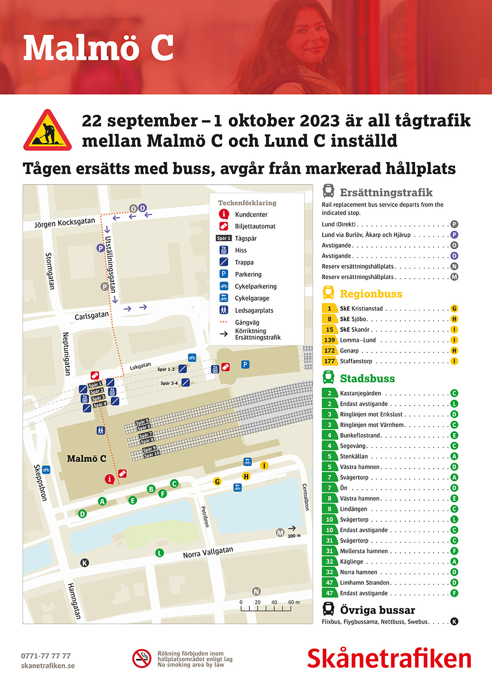
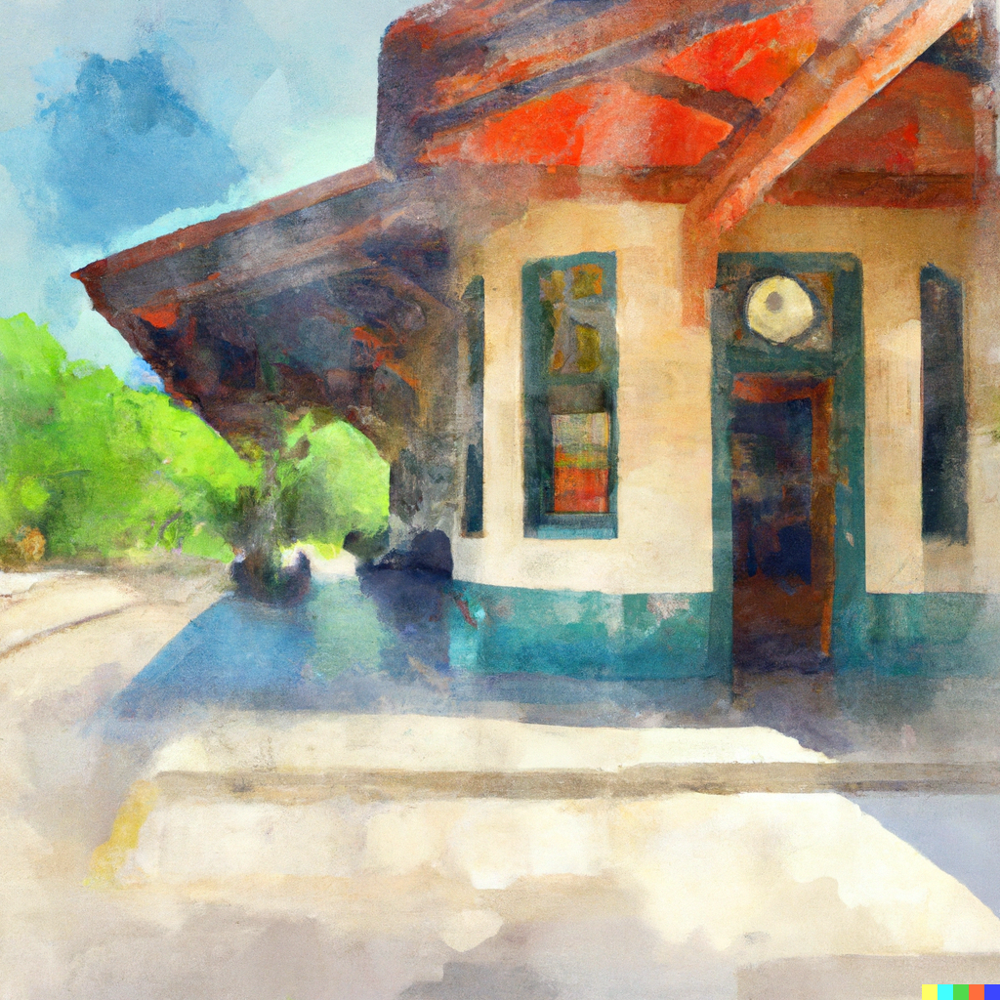

Travel

Replacement busses between Malmö C and Lund
Due to track maintenance, the trains between Lund and Malmö are cancelled during the week of the meeting. There are rail replacement buses between Malmö C and Lund.
You can read about the disruption on the skanetrafiken website.
When arriving in Malmö from Copenhagen, you can take the replacement bus from the stop at P on the map below. Stop P is North of the station and across two roads. There will be signage. Feel free to ask for guidance on +46 771 77 77 77.
Lund University has compiled a list of information about travelling to the university.
These include:
Trains
Busses
Planes
Taxis in Lund
- Call Taxi Lund here